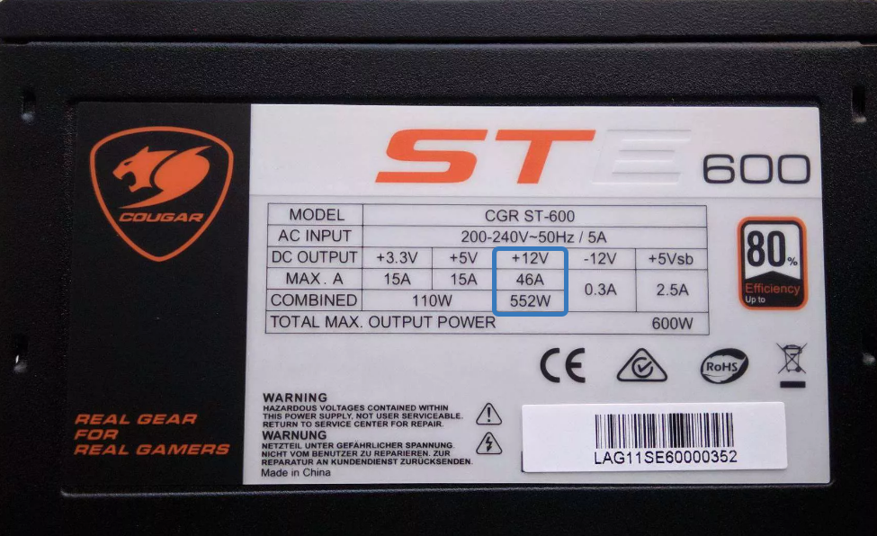
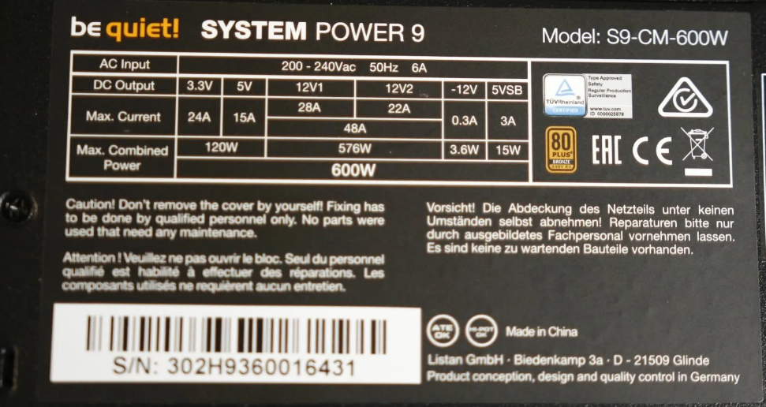
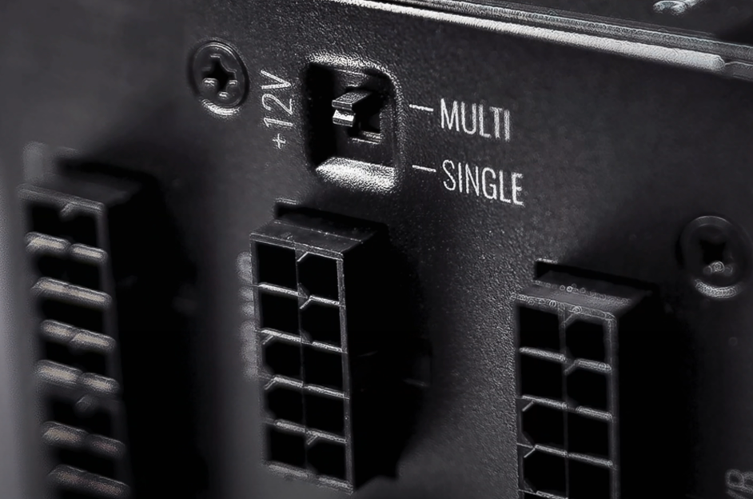
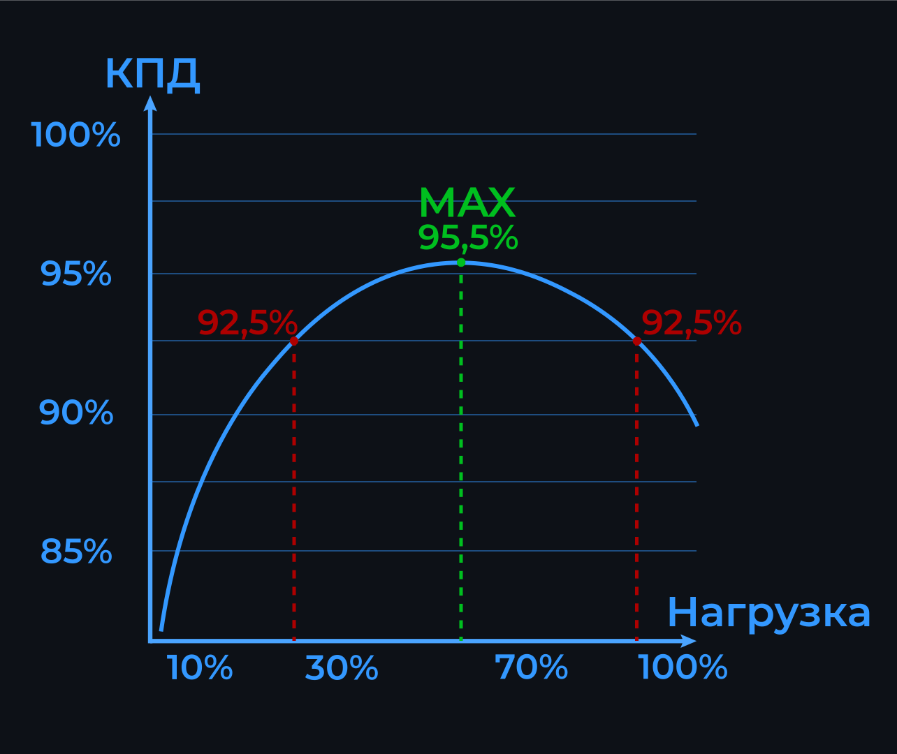
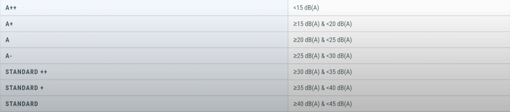

Блок питания (БП) – параллелепипед, на одной из граней которого есть отверстия для отверстия для входа воздуха, а на другой – для выхода.
Также, на одной из граней расположен разъём для подключения блока питания к розетке. Из противоположной грани блока выходят провода, питающие компоненты системы.
Модульность
Блоки питания бывают модульными, полу модульными и стандартными. Модульные блоки имеют возможность отсоединения от них любых проводов, полу модульные – лишь некоторые провода, от стандартного блока отсоединить с возможностью присоединить обратно вы ничего не сможете. Модульность блоков влияет только на внешний вид и удобство вашей сборки.
Блок питания ПК имеет одну ключевую задачу – преобразовать огромное для компьютера напряжение из розетки в соответствии с электрическими требованиями всех потребляющих электричество компонентов ПК. Чаще всего, 230 вольт от розетки он разбивает на линии с напряжением в 3, 5, 12 вольт.
Линии в 3 и 5 вольт обычно питают накопители, вентиляторы, материнскую плату, подсветку. Линии в 12 вольт также питают эти устройства, но параллельно задействуются для питания процессора и видеокарты. Эти два компонента системы используют наибольшее количество мощности блока.*
Форм-факторы БП
На текущий момент реалистично встретить на рынке четыре форм-фактора БП: ATX (86x150x140 мм), SFX-L (64x125x125 мм), SFX (64x125x100 мм), TFX (64x85x175 мм). ATX – самый распространённый и рекомендованный к покупке для корпусов форм-фактора ATX. SFX-L и SFX – идеальные форматы для мини-ПК.
Последний форм-фактор используется крайне редко, так как его максимальная мощность не превышает 350 ватт, однако для миниатюрного офисного ПК он подойдёт идеально. Расположение блоков меньших размеров в больших корпусах возможно благодаря переходникам, однако блоки меньших размеров уступают большим по всем характеристикам, кроме габаритов.
При выборе БП под корпус, помимо соответствия форм фактора БП форм фактору корпуса, нужно учитывать максимальную длину блока питания, которую вы можете найти в характеристика корпуса.
Питающие разъёмы БП
При выборе блока питания стоит обращать внимания на количество кабелей, питающих то или иное устройство. Пин – маленький металлический стержень, находящийся чаще всего в почти таком же маленьком пластмассовом корпусе в форме параллелепипеда.
Глядя на количество стержней или пластиковых корпусов вы всегда можете сказать сколько пин имеет разъём.
Кабели питания MOLEX используются для питания некоторых вентиляторов напрямую, а также питания разветвителей для нескольких вентиляторов с другим – 4-ёх или 3-ёх пиновым разъёмом. 3-ёх пиновый разъём для питания вентилятора совместим с 4-ёх пиновой компоновкой разъёма кабеля самого вентилятора, но не наоборот.
Кабели питания SATA питают жёсткие диски и SSD-накопители, подсоединяемые к материнской плате через кабель SATA-SATA.
Кабели питания PCI-E (видеокарты) тоже имеют пиновую структуру, как и процессорные кабели. Количество пин блока питания и видеокарты должны строго совпадать, поскольку в случае избыточности и не модульности коннектора, вы физически не сможете оставить часть ненужных коннекторов не подключёнными, чего нельзя сказать про кабели питания процессора.
Кабели питания CPU (процессора) имеют пиновую структуру. Их количество у блока должно превышать или равняться количеству разъёмов на материнской плате (чаще всего над сокетом процессора).
Мощность блока питания
Мощность БП – ключевая характеристика при сборке ПК. Ещё важнее – мощность БП по 12-ти вольтовой линии, так как по ней питаются самые энергозатратные компоненты – процессор и видеокарта. У хороших БП общая номинальная мощность, которая и рисуется на коробке почти равна мощности по 12-ти вольтовой линии. Однако у бюджетных моделей она может быть существенно меньше. На самом блоке мощность по 12-ти вольтовой линии обозначается так:

Иногда, 12-ти вольтовую линию разделяют, как здесь:

Иногда эту линию можно разделить переключателем на блоке:

Разделённые линии обладают меньшим запасом мощности чем целые. Посчитать мощность вы можете, умножив количество ампер по линии на 12. При превышении допустимой нагрузки на линию, блок выключится.
Воспользовавшись калькулятором мощности блока питания (ссылка вниз страницы) вы сможете точно рассчитать необходимую мощность БП в соответствии с выбранными комплектующими ПК.
Если вы планируете будущее улучшение компонентов системы, то лучше всего если вы посчитаете мощность для предполагаемого апгрейда или прибавите к мощности БП для текущей сборки 100-150 ватт. При конечном выборе блока всегда смотрите именно на мощность по 12-ти вольтовой линии, а не по номинальной.
На страницах магазинов с видеокартами вы можете встретить графу “Рекомендуемая мощность блока питания”. Мощность, указанная под этой графой, является крайне неточной, так как считается примерно для всей системы, компоненты которой никому, кроме создателей этой графы неизвестны. Поэтому, не придавайте им совершенно никакого значения.
Максимальная эффективность любого блока питания достигается в соответствии с графиком отношения коэффициента полезного действия к задействованной мощности блока питания. Пример такой кривой:

У каждого блока питания такая кривая отличается. Найти её вы можете в технических характеристиках блока или на коробке от него. Чаще всего она похожа на представленную на схеме. Соответственно, ваш блок будет потреблять меньшее количество электричества и меньше нагреваться если он будет загружен на процент, соответствующий максимальному КПД.
Уровень шума и сертификация Lambda
Таблица соответствия уровню сертификата шуму:

Сертификация 80 PLUS
Уровни сертификата 80 PLUS показывает максимальное значение КПД блока, а также скорость возрастания КПД при увеличении нагрузки.
Хороший сертификат не всегда означает, что блок питания также хорош, однако хороший блок питания почти всегда будет иметь как минимум уровень 80 PLUS. Описанные выше параметры возрастают от обычного 80 PLUS сертификата в следующем порядке: BRONZE, SILVER, GOLD, PLATINUM, TITANIUM.
Алгоритм выбора БП
1. Выберите подходящую мощность БП при помощи калькулятора с учётом предполагаемого обновления комплектующих и считая мощность именно по 12-ти вольтовой линии.
2. Отсортируйте поиск по наличию сертификата 80 PLUS и Lambda, форм-фактору БП.
3. Определите надобность модульности БП в соответствии с той суммой, за которую вы за неё заплатите. Выбирая блок, не сортируйте поиск по разъёмам питания. Самостоятельно проверяйте на соответствие количество разъёмов питания блока с нужным количеством.
4. Крайне рекомендуем ознакомится с оценкой БП от портала 4PDA по данной ссылке. Рекомендуем покупать блоки с оценкой в таблице от 7 и выше. Однако, стоит помнить что далеко не все БП были протестированы для создания этой таблицы. Также, отношение цены к качеству товара в таблице не учитывается.